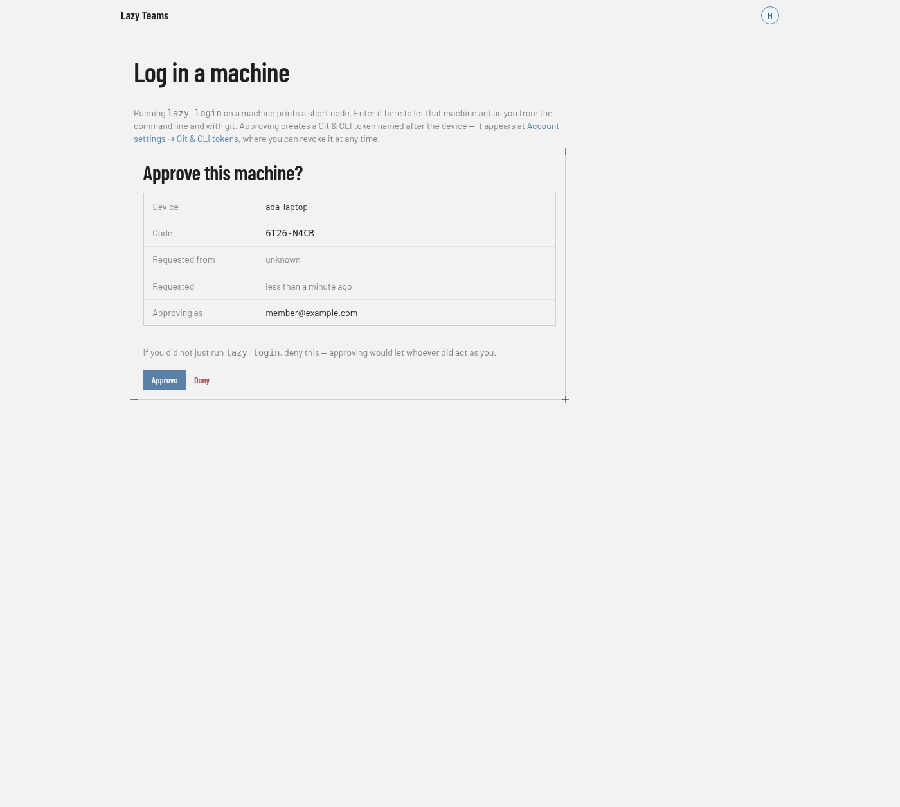

Logging a machine in to Lazy Teams
lazy login connects a machine to a Lazy Teams install. Run outside a
repository, it logs the machine in — after which plain git clone of a
repository the install hosts works, the way it does for GitHub after
gh auth login. Run inside a clone, it also binds that clone to one project on
the install. Nothing secret is typed, pasted or displayed: you approve the login
in a browser that is already signed in, and the credential travels from the
install to the machine directly.
Cloning a hosted project
If the install hosts the project's repository, its project page shows the clone URL and two ways to use it, each with a Copy button:
$ lazy login https://teams.example.com
$ git clone https://teams.example.com/git/acme/api-server.git
or, in one step — log in if needed, clone, and bind the new clone to the project:
$ lazy clone https://teams.example.com/git/acme/api-server.git
Use the address your install is served on. lazy uses the scheme you type exactly, as git does: https:// stays https://, and http:// stays http://, so installs on a private network or tailnet work over plain http. Only a bare host (lazy login teams.example.com) gets https://, because nothing was typed. The login is scoped to that exact address and is never sent across a redirect; if the address redirects (say http:// to https://, or to a sign-in page), lazy stops and tells you where it went so you can use that address. lazy logout needs no network.
A login is only ever sent over the scheme it was made on. If this machine logged in at https://teams.example.com, lazy clone http://teams.example.com/… refuses rather than send that login unencrypted; use the https:// address, or — if the install really is served over plain http — run lazy login http://teams.example.com first. lazy also refuses a login that the install you typed did not issue itself (an address relaying another install's approval), and a code-approval page on any address other than the one you typed. A login an older lazy sent to an http:// address is cleaned up the next time you run lazy login, lazy logout or lazy clone, and lazy tells you to revoke that token.
lazy clone <clone-url> [dir] clones into dir (default: the
project's name). It checks you are a member of the project before cloning, and
reuses this machine's login for that exact address — same scheme — when it has one that still works. A project whose
repository lives on GitHub or GitLab is cloned from there instead — lazy clone
says so; clone it as usual and run lazy login inside the clone.
How git gets the login
lazy login adds one include.path entry to your user-level git config —
the file git config --global writes, which it names when it changes it —
pointing at a small file of lazy's own (permissions 0600). That file sets, for
your install's exact address only:
- an
Authorization: Bearerheader carrying the login's token, and followRedirects = false, so git never follows a redirect anywhere else.
The token is never written into your .gitconfig itself or into any
repository's .git/config, and no other host ever receives it. lazy logout <teams-url> removes the entry and the file.
This works behind a sign-in proxy (which accepts the Bearer header and cannot read a password) and without one: every login's token carries git access, whether you approved it in the browser or with a code.
Logging in
Inside a clone of the repository, lazy login also binds the clone to a project:
$ cd ~/src/api-server
$ lazy login https://teams.example.com
Open https://teams.example.com/device and enter: KTPX-9QFD
(or, with the code already in it: https://teams.example.com/device?code=KTPX-9QFD)
✓ Approved as ada@example.com
Which project is this clone?
1) acme/api-server
2) acme/web
> 1
Bound to acme/api-server on teams.example.com.
What happens, step by step:
- Lazy asks the install to start a login and prints a short code.
- You open the URL in a browser — on this machine or any other — and type the code. You see a page naming the machine that is asking, where it asked from, and who you would be approving as. The second link has the code already in it; it is a convenience, and typing the code yourself is the safer habit, because it means you know which request you are approving.
- You approve. The install creates a Git & CLI token named after the machine.
- Lazy collects the token, asks which project this clone is, and saves both. Outside a clone there is no project to ask about: it saves the machine login.
The code expires after 15 minutes. If nobody approves it in time, run
lazy login again for a fresh one. Expiry is the whole window, not just the
approval: a code approved but never collected stops working at the same moment.
A brief network or server hiccup while lazy is waiting does not end the login — it keeps waiting until the code expires. If the install asks it to check less often, it waits progressively longer between checks, so several people logging in from one network at the same time do not crowd each other out.
If a login ends after you approved it — you interrupt it, the install becomes unreachable, or the project you named is not one you are a member of — the token it created still exists. Lazy says so, and you can retire it at Account settings → Git & CLI tokens (from your avatar menu).
Only you can approve your own logins. An administrator viewing the site as you cannot approve one on your behalf, even with writes enabled — approving puts a long-lived token on a machine, and that token would keep working long after they stopped viewing as you. The approval page says so instead of offering the button.
What a bound clone can do
Once a clone is bound, the ordinary commands work exactly as they do against a
local project — lazy list, lazy show, lazy diff, lazy create,
lazy edit, lazy unblock, lazy accept, and the rest — except they run
through your Teams install instead of a daemon on your machine. Everything you
do is authenticated as you and shows up under your name, the same as if you
had used the browser.
A bound clone has no daemon of its own, so a handful of commands that manage
this machine refuse instead of trying to operate infrastructure that was
never there: lazy daemon start / stop / status, lazy init,
lazy doctor (there is nothing local left to diagnose), and lazy dashboard
(there is no local dashboard to open — the install's own web pages are it).
Each one says the clone is bound and points at lazy logout as the way back
to working locally.
If this clone already runs a local daemon (you used lazy here before binding
it), lazy login refuses until you stop it with lazy daemon stop. Binding
also makes lazy forget that local daemon, so a bound clone's commands always
go to your Teams install and never to the old local project.
A bound clone can never do more than the browser can. A few task settings have
no control in the browser, so the command-line options that set them are
refused from a bound clone: --runner and the --review settings on
lazy create / lazy edit, and lazy edit --parent naming a git branch rather
than a task (use lazy reparent, like the browser's "Move under another task").
You can still set a task's parent task, or clear it, the same way the browser's
edit page does.
For the same reason, the options that let a command skip a check the browser
enforces are refused too: lazy accept --allow-broken and
--allow-review-issues, lazy start --force-local, lazy unblock --agent,
and lazy review --auto-fix / --model. The refusal says what was refused, and the
command works without it.
lazy create --parent may name a branch: a branch you pushed to the project's
repository is fetched by the install, and the task starts from it. Name the
branch exactly: a name that differs from an existing branch only in letter
case, in whole or in any part (Main or MAIN/x when main exists,
Release/2.0 when release/1.0 exists), is refused. Creating a
task from a bound clone is all or nothing — when anything is refused, no task
is created and the command says so.
lazy stats limits and lazy stats budget work from a bound clone and show
you exactly what the install's Usage page shows you: your own credentials, the
project's shared one, and any not tied to a member — never a colleague's.
The usage-pause check that lazy start and lazy unblock run before they
open an editor asks the install the same way.
lazy chat, lazy report and lazy ask on a stored conversation work from a
bound clone and use your own model connection, exactly as the browser
does — never a colleague’s. lazy chat <task> opens interactive terminal Chat
on the install, like lazy pair opens Pair: it runs there, in an environment
of your own, and ctrl-] leaves it. Chat uses the task’s profile and supports
Claude Code, Cursor and Pi; for a Codex task, use lazy ask <task> or the
browser’s Chat tab for a read-only question. Member terminals can run
beside the task’s agent. --effort and --override-usage-pause do not apply
to bound-clone Chat, because the install decides how the session runs.
lazy report and lazy ask <conversation> run their model calls on the
install and print the answer here. lazy report reads the project’s tasks
from the install but its main-branch commits from your checkout, so pull first
for an up-to-date report. If a required connection is missing, the command
explains which one to connect and runs nothing.
Your builder, from a bound clone
lazy builder in a bound clone does not start anything on your machine. Your
builder runs on the Teams install, next to the project, and lazy builder
opens a terminal on it. Each lazy builder starts another builder with a fresh
conversation; existing builders keep running. Use lazy builder attach <id>
to rejoin a running builder or resume a stopped one. The same builder is
reachable from the Builders page in your browser, so you can start on your
laptop and pick it up from your phone. Its conversation is kept with the project.
- ctrl-] leaves the terminal. The builder keeps running.
lazy builder stop [<id>]stops a builder and keeps its conversation;lazy builder attach <id>resumes it.lazy builder end [<id>]ends the run. Its transcript remains available and can still be resumed from the browser’s builders list.- With several builders, name the id to attach, stop or end; leaving it out lists the choices rather than picking one for you.
In the browser, a stopped builder stays on the Builders page, marked "Stopped — resumable". Resume starts that builder again on the profile it used before, leaving your other builders running. If it stopped unexpectedly, its page says why, with the exit code. If its session file is missing, Resume explains that and starts nothing; its transcript stays readable. Continue starts an additional builder from a summary instead. See Resuming a builder.
A builder runs until you stop or end it — there is no idle timeout. It runs on
your own connection for its Claude Code or Codex profile. Choose a profile
with Runs on in the browser; a missing connection is explained before
anything starts. Options that choose how
a local builder runs (--model, --effort, --resume, --no-autonomous)
are refused from a bound clone: the server decides how its sessions run.
To use a Claude Code you run yourself against the project instead, see Claude Code against a Lazy Teams project — it works, with fewer capabilities than the server-side builder.
Without --local (below), lazy pair and lazy shell likewise go through Teams
rather than opening anything locally. They enter your own environment on the
task’s files, alongside the agent and other members. Pair supports Claude Code,
Codex, Cursor and Pi, using your connections for the task’s profile. See
Pairing for conversation capture and tool limits.
Working on a task's branch on your own machine
Some work has to be built and tested locally — a macOS app, say. Every task's
branch (lazy/<task>) is on the project's repository (the install's own, or any
other remote that is not GitHub or GitLab), kept current as the
task's turns finish, so git fetch in your clone sees all of them. Accepted
work is pushed to the target branch (usually main) there too. If someone
pushed to main on the install directly, lazy accept brings those commits in
first. Lazy never force-pushes: if main on the install and the project's own
copy have diverged, the accept is refused before anything is merged.
Likewise, if commits were pushed to the task's own branch (for example from
lazy shell <task> --local) and the task does not have them yet, lazy accept
is refused and points you at lazy sync <task>, so they are never left out. That
answer comes first even when the target is protected, because it is one you
can act on from the clone. Once the task has them, accept it with Accept on the
task in the browser: the project's default branch is protected by default, and
lazy accept from a clone is refused there and points you to Teams.
lazy shell <task> --local gives you a checkout of one:
lazy shell fix-login --local
It fetches the task's branch, creates a git worktree of your clone beside it
(<clone>-<task>, so your editor and build tools can open it like any other
directory), and opens your shell there. If the branch is already checked out
in a worktree of this clone, that one is used.
From then on it is plain git. The checkout tracks origin/lazy/<task>, so
git push sends your commits to the task's branch on the install, and the
agent picks them up the next time the task is synced (lazy sync <task>) or
unblocked. Any team member may push a task branch; for other branches, see
who can push what.
Lazy never pushes for you — not when you commit, not when you leave the shell.
Running it again is safe: a clean checkout that is behind is fast-forwarded,
and one with commits you have not pushed or changes you have not committed is
left exactly as it is, with a line saying why. --host does not apply in a
bound clone — the task's own worktree is on the server — and says to use
--local instead.
Which project this clone is
Lazy never guesses from the git remote. Two clones of the same repository can
belong to different projects, so the project is always chosen out loud: from the
list when there is a terminal to ask, or with --project when there is not.
lazy login teams.example.com --project acme/api-server
In a script or anywhere without a terminal, --project is required. A login
without it is an error rather than a guess, and it is refused before anything is
created on the install.
One clone, one project. Logging in again replaces the binding and says so. There is no command to switch a clone between projects: if you work on two projects, you have two clones — which you have anyway, because a clone is a checkout of one repository.
When the project or team is renamed
A clone keeps working after its project or team is renamed. It remembers the
project it was bound to by its identity as well as by its name, and keeps
reaching that project under the new name — even after another project takes
the old name. lazy login with no arguments still prints the name you bound
by; log in again whenever you like to see the new one.
If another project has taken the old name since a clone logged in, the clone is
refused rather than connected to that other project; log in again with
lazy login --project <team/new-name>.
When the project is deleted
A clone bound to a deleted project never reaches its successor. If the project
is deleted and a new one is created under the same team/project name, a clone
logged in before that delete is refused rather than reaching the new project.
Logins made since, and addresses that were never reused, are not affected. Run
lazy login again to bind it to the new one.
Seeing where a machine and a clone point
Run lazy login with no arguments. It prints which installs this machine is
logged in to and, inside a clone, its binding — and starts nothing:
$ lazy login
This machine is logged in to: https://teams.example.com
git to those installs carries the login; lazy logout <teams-url> ends it
This clone is bound to acme/api-server on https://teams.example.com
bound 12/03/2026, 09:41:00
lazy logout unbinds this clone
Logging out
lazy logout https://teams.example.com # this machine, from that install
lazy logout # inside a clone: unbind the clone
lazy logout <teams-url> deletes this machine's login to that install and
removes the git config entry lazy login added (it names the file). A bare
lazy logout inside a clone deletes the clone's stored login, which is also how
the clone is unbound; outside any clone it logs the machine out of every install.
If a clone
somehow ends up holding more than one login — a state every other command refuses
to act on — lazy logout clears all of them and says how many it removed. It stops
this machine using the token; it does not retire the token. To end access
altogether, revoke it at Account settings → Git & CLI tokens (from your avatar menu) on the install — that takes
effect on the next request, from anywhere.
Where the login is kept
In lazy's own credential store — a clone's login with that project, and the machine's login in a store of its own that belongs to no project — split the same way every credential there is:
- the token goes to the OS keychain (macOS Keychain, libsecret on Linux, or a mode-0600 file on a host with neither), and
- the binding — which install, which project, when — sits beside it in the non-secret index.
That split is why lazy login with no arguments can tell you where a clone
points without unlocking a keychain to do it.
The tokens this creates
A login creates an ordinary Git & CLI token named after the machine, with git, CLI and MCP access. It appears at Account settings → Git & CLI tokens (from your avatar menu) alongside any token you created by hand, showing when it was last used, and it is revoked there like any other. Logging the same machine in twice gives the second token a distinguishing suffix rather than failing.
Tokens carry separate access for git and for the command line, and one is refused where the other is expected. A login's token has both, and sets git up for you (see how git gets the login); a token you create by hand for git is described under hosting repositories.
Approving from the browser
The approval page lives at /device on your install and is also reachable from
Account settings → Git & CLI tokens (from your avatar menu). Open it and type the code in — it is case-insensitive
and the dash is optional. The prefilled link lazy prints underneath works too,
and is a convenience rather than the mechanism.

If you did not just run lazy login, deny it. Approving would let whoever
did act as you.
Human-only, deliberately
There is no MCP tool for logging in or out. Connecting a machine to an install is a decision a person makes at a keyboard, in a browser they are already signed in to; an agent must never do it. See surface asymmetries.
Display name
In Account settings → Profile, set the name you want shown beside your actions — sign-offs, turn bylines and comments. Leave it blank to be shown by your email address. The name applies to entries written after you save it; entries already written keep the name they were recorded with.
Your email address is always shown next to your name, so nobody can pass for you. A name (or a rename) is refused if it looks like an email address, is a reserved word such as admin, god, lazy, system or support, or matches — ignoring case and spacing — another member's name or email in a team you share. If your name later matches a teammate's (for example, when someone with the same name joins), the Profile page warns you, and new entries show only your email until one of you changes it.
Alternative email addresses
In Account settings → Email addresses, add an alternative email and open the verification link sent to that inbox. Confirm while signed in to your existing member account. The link expires after one hour. Your installation must have outgoing email configured.
Once verified, the address signs in to the same account with your existing password or through a trusted sign-in proxy, including one using a different OAuth account. Your primary email remains your notification address and account identity. An address cannot belong to two members. Remove alternatives from the same settings page when you no longer want to use them.
If your installation cannot send email, a site administrator can add an alternative email to a member as already verified: in God mode, open the member's page, enter the address under Alternative emails and confirm. No email is sent, the address works for sign-in immediately, and the member's settings page shows it as verified by an admin.